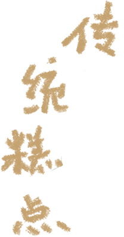

美食简介 |
历史故事 |
|
青团是江南地区的传统特色小吃，青色，用艾草的汁拌进糯米粉里，再包裹进豆沙馅儿或者莲蓉，不甜不腻，带有清淡却悠长的青草香气。
青团是江南人家在清明节吃的一道传统点心，据考证青团之称大约始于唐代至今已有1000多年的历史，每逢清明几乎都要蒸青团，古时候人们做青团主要用作祭祀，虽然青团流传千百年，外形一直没有变化，但现在它作为祭祀品的功能已日益淡化，而是成了一道时令性很强的小吃。 现在做青团，有的采用浆麦草，有的采用青艾汁，也有用其他绿叶蔬菜汁和糯米粉捣制再以豆沙为馅而成。青团作为祭祀的功能日益淡化，而更多被人用来当作春游小吃。 青团油绿如玉，糯韧绵软、清香扑鼻，肥而不腴，是一款天然绿色的健康小吃。蒸熟以后绿绿的松软的皮儿，豆沙馅心甜而不腻，带有清淡艾草香气，香糯可口。 |
传说有一年清明节，太平天国将领李秀成被清兵追捕，附近耕田的一位农民上前帮忙，将李秀成化装成农民模样，与自己一起耕地。没有抓到李秀成，清兵并未善罢甘休，于是在村里添兵设岗，每一个出村人都要接受检查，防止他们给李秀成带吃的东西。
回家后，那位农民在思索带什么东西给李秀成吃时，一脚踩在一丛艾草上，滑了一跤，爬起来时只见手上、膝盖上都染上了绿莹莹的颜色。他顿时心生一计，连忙采了些艾草回家洗净煮烂挤汁，揉进糯米粉内，做成一只只米团子。然后把青溜溜的团子放在青草里，混过村口的哨兵。李秀成吃了青团，觉得又香又糯而且不粘牙。天黑后，他绕过清兵哨卡安全返回大本营。后来，李秀成下令太平军都要学会做青团以御敌自保。吃青团的习俗就此流传开来。 |
美食简介 |
历史故事 |
|
定胜糕是浙江省杭州市的一种传统名点，属于浙菜系-杭帮菜，其具有春季养生调理，术后调理的功效。有甜味，色泽淡红，松软清香，入口甜糯。糕点比较软，有点松，带甜甜的豆沙味。
传说是南宋时百姓为韩家军出征鼓舞将士而特制的，糕上有“定胜”两字，后就被称“定胜糕”,又称“南宋定胜糕”。 另一个传说是南宋定都杭州后，岳飞为保护国土多次领军出征，杭州百姓沿途都会送上定胜糕，盼胜利归来，这便是岳飞与定胜糕的真实故事，流传千年；南宋文献《梦梁录》亦有相关记载。 |
常熟地方有一种形状像元宝的大众糕点，叫定胜糕，民间每逢迎亲乔迁，还保留着送定胜糕的习惯，表示吉祥喜庆。
定胜糕传说一 据老辈里讲，在唐代，常熟城里的官府规定，市上的糕点要计量，一升箩米做十个，约合一两一个，叫做“定升糕”。 常熟百姓为使一两一个的糕点做大，既吉利，也讨官员欢心，后来想出了一个极好的办法：用梨木雕刻成各种各样的花朵和树叶模样的容器，正好装下一两湿米粉，拌米粉的水里掺上各种花卉和菜蔬的汁液，有红的、有黄的、有绿的，容器口大底小，容易倒出，图案有半桃、牵牛、梅花、线板、棱台、五星，等等形状。倒出后上蒸笼一蒸，乘热盖上红印，取名为“鼎盛糕”。 到了明朝，打仗的事儿越来越多，老百姓就把“鼎盛糕”送给当兵的壮丁作为干粮，取名为“定胜糕”。 从“定升糕”到“鼎盛糕”，再到“定胜糕”，虽然音调没有变，意义是渐变的。据说，有一段时间还有将“定升糕”和“高升爆竹”送给官员的事，意思是“肯定高升”。 定胜糕传说二 相传宋朝建炎年间，金兀术进犯临安，被杭州军民像打野狗一样打得立不住脚，心急火燎地从临安退到了平江，闯进了苏州城。 当时，南宋名将韩世忠正在松江一带驻防，听说金兵朝北撤退，立即和夫人梁红玉带领八千人马，埋伏在太湖岸边，狙击金兵北退。金兀术没想到在大湖遇上了韩世忠，吃了一记闷棍，心里非常恼怒，忙求来救兵和韩世忠大战。这一仗足足打了七七四十九天，打得天昏地转，连太湖君也吓得退避三舍。 常言道：“一人难挡四手，四手还怕人多。”韩家军虽然英勇善战，可八千人马哪能抗击十万金兵。要胜金兀术，须有个良计妙策。为这事，韩世忠日日夜夜在寻思，弄得茶饭无心，眼睛熬得通红。一天深夜，侍卫来报，说是夫人请见。韩世忠抬起头来，只见夫人梁红玉端着一盆糕点，恭恭敬敬地跑进来说道：“将军，苏州百姓又送来了几箩甜糕，慰劳士兵。这一盆糕点，他们说一定要请你品尝，这是他们的一点点心意。” 韩世忠接过一看，这糕点式样很别致，两头大，中间细，蛮像个定样。便伸手取过一块，一掰，只见糕里有张纸条，上面写着四句话：“敌营像定榫，头大细腰身，当中一斩断，两头勿成形。”韩世忠很稀奇，连忙招呼夫人过来，夫人一看说：“老百姓真是知道将军的心事，你看，这四句话不是明明告诉我们金军的阵势吗，老百姓摸得清，看得明，真是个好消息！” 韩世忠高兴他说：“是呀，我这几天正在探索敌情，还没摸出名堂来，可老百姓已将金贼的阵势给我弄清楚了。照这样看来，我马上出兵先把金兵齐腰斩断，让他们首尾不能相顾，阵脚大乱，然后乘机追杀，乱中取胜。” 于是，韩世忠连夜调兵遣将，像一把飞刀，直向敌营拦腰杀去。顿时，金军军心大乱，众金兵像掐了头的苍蝇，南北两头，只顾自己夺路逃命。一路逃到镇江附近的黄天荡时，被早已赶到的梁红玉的精兵迎头一阵痛打，死伤大半；一路在太湖里遇上了风暴，溺死无数。 太湖一仗，韩家军大获全胜，苏州百姓送的定样糕，立了大功。因为定榫和定胜谐音，韩世忠就把这糕名为“定胜糕”。又因为定胜糕三字有大吉大利，高高兴兴的意思，所以后来苏州人常常喜欢把定胜糕作为喜庆和节日赠送亲友的礼物。这个习俗，一直传到现在。 定胜糕传说三 北宋时，杨家将们出征，百姓于是自发地准备了吃的喝的为军士送行。将士吃了一种糕点后，感觉美味异常，既可就酒，又可果腹，就问百姓这个糕是什么，百姓希望杨家将们可以旗开得胜，于是就说它叫定胜糕。杨家将听后士气大增，满怀信心地出战去了。宋室南迁后，定胜糕也跟着传到了如今的杭州。 |
美食简介 |
历史故事 |
|
酥油饼，亦称吴山酥油饼。为浙江杭州著名传统风味特产，因主要产于杭州市区吴山（俗称城隍山）而得名,早在二、三百年前即已驰名四方。
清代著名小说《儒林外史》一书中即已提及，并作赞誉。酥油饼用上等白面粉搀和白糖，用花生油煎制而成。因饼开蒙茸有如蓑衣，所以杭人又呼之为"蓑 衣饼"。饼色金黄，食时，先时细白糖粉，入口时，松脆可口，颇具风味。 数百年来凡登吴山者，均以一尝吴山酥油饼为快事。今吴山茗香楼等处仍有供应。 |
清代著名小说《儒林外史》一书中即已提及，并作赞誉。酥油饼用上等白面粉搀和白糖，用花生油煎制而成。
吴山酥油饼历史悠久，约一千多年前（五代十国末期），赵匡胤与南唐刘仁赡在安徽寿县交战时，当地百姓用栗子面做成酥油饼支援赵军。后来赵匡胤当了皇帝，经常命御厨制做此饼食用。高宗时，迁都临安（今杭州），也常吃此饼，以后由御厨传到民间，人们在吴山风景点仿照此饼改用面粉起酥制成吴山酥油饼，被誉为吴山第一点而流传至今。因旧时常在吴山风景区供应，又得到杭州太守苏东坡的赞美而得名。 吴山酥油饼的起源有两种传说。一说源于宋初问世的名点“大救驾”，后南宋迁都杭州，世人为借故讽政，便仿制“大救驾”，希望南宋朝廷记住开国的艰难，不要丧权辱国。此点以吴山所制最为有名，故得“吴山酥油饼”的美名。 二说起名于北宋苏东坡。当时，苏东坡任杭州知州，一天公余兴浓，身披蓑衣，脚着芒履，冒雨游吴山，见众人争购油饼，也买几只，解下酒葫芦，坐在野花丛中，品尝起来。觉得此饼香脆松口，味道特佳。问店家有何美名?店家回答：“山野小吃，无什么美名”。苏东坡细观此饼，一层层、一丝丝，像身上蓑衣一样，便随口说道：“好，既无雅名，就叫它蓑衣饼吧!”因为，苏东坡为此饼取名，从此，吴山“蓑衣饼”，生意兴隆，声名远扬。因为，“蓑衣饼”与“酥油饼”，字音相谐，又加此饼本身又油又酥，后来就改称为“酥油饼”。 酥油饼系由安徽寿县一带栗子面酥油饼演变而来。用油面叠酥制成。色泽金黄，曾酥叠起，上尖下圆，形似金山，覆以细绵白糖，脆而不碎，油而不腻，香甜味美，如口即酥。南宋时吴山始制。 |